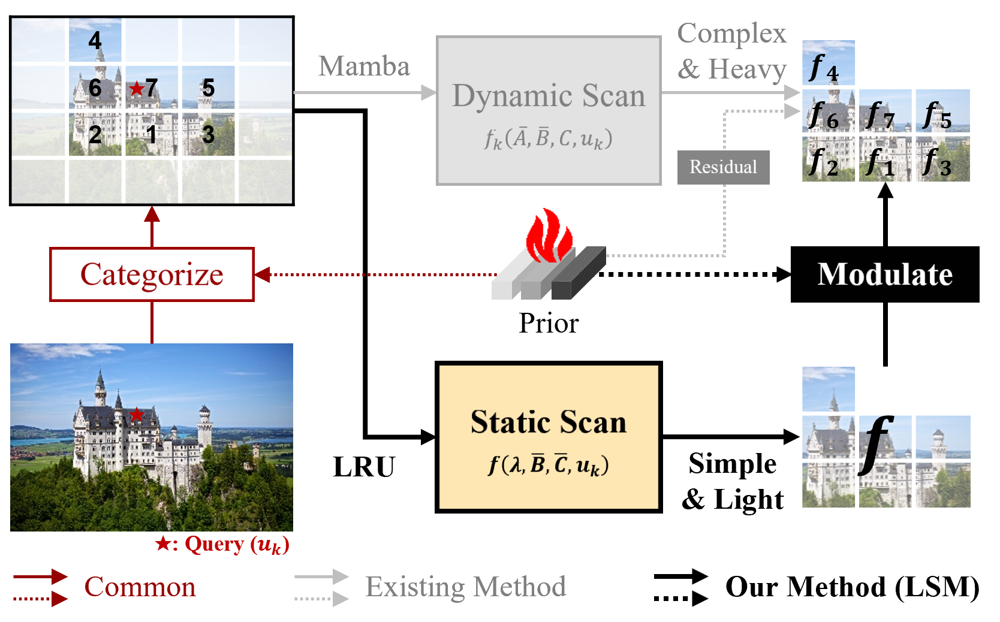
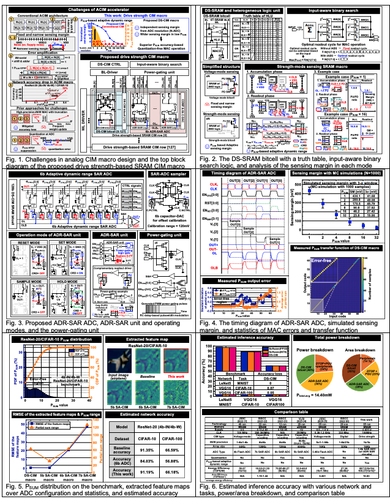
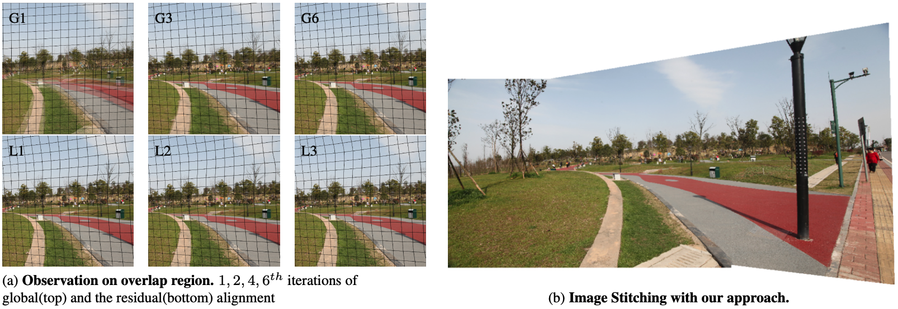

My research focuses on compressed-domain visual computing, bridging classical codec
pipelines and modern neural representations. I develop efficient visual representation and inference
methods that exploit bitstream-level structure, including JPEG-domain neural operators,
lossless implicit neural representations, and codec-guided video
understanding for vision-language models.
I am currently open to work — happy to chat about research collaborations,
internships, and post-Ph.D. opportunities.
Feel free to send me an e-mail if you want to have a chat! Contact: wookyoung0727@korea.ac.kr
JPEG Processing Neural Operator for Backward Compatibility Woo Kyoung Han*,
Yongjun Lee*,
Byeonghun Lee,
Sang Hyun Park,
Sunghoon Im, and
Kyong Hwan Jin†(*denotes equal contributions) IEEE/CVF International Conference on Computer Vision
(ICCV), 2025.
Paper
We propose JPNeO, a neural operator framework for backward-compatible JPEG
processing that operates directly in the JPEG domain.
Towards Lossless Implicit Neural Representation via Bit Plane Decomposition Woo Kyoung Han,
Byeonghun Lee,
Hyunmin Cho,
Sunghoon Im, and
Kyong Hwan Jin† IEEE/CVF Conference on Computer Vision and Pattern Recognition
(CVPR), 2025.
Paper
We introduce a bit-plane decomposition that enables lossless implicit neural
representations, allowing exact reconstruction of digital signals with continuous
networks.
JDEC: JPEG Decoding via Enhanced Continuous Cosine Coefficients Woo Kyoung Han,
Sunghoon Im,
Jaedeok Kim, and
Kyong Hwan Jin† IEEE/CVF Conference on Computer Vision and Pattern Recognition
(CVPR), 2024.
Paper
We present JDEC, a JPEG decoding network with enhanced continuous cosine
coefficients, recovering high-fidelity images directly from compressed bitstreams.
ABCD: Arbitrary Bitwise Coefficient for De-Quantization Woo Kyoung Han,
Byeonghun Lee,
Sang Hyun Park, and
Kyong Hwan Jin† IEEE/CVF Conference on Computer Vision and Pattern Recognition
(CVPR), 2023.
Paper
We propose ABCD, an arbitrary-bitwise coefficient estimation framework for
de-quantization, restoring images from heavily quantized inputs across arbitrary bit-depths.
We characterize the pre-softmax attention matrix QK in transformers as an
associative memory matrix encoding pairwise associations between input features.

Linear Recurrent Unit with Semantic Modulation for Image Super-Resolution
Mingyu Choi,
Woo Kyoung Han,
Sunghoon Im†, and
Kyong Hwan Jin† IEEE/CVF Conference on Computer Vision and Pattern Recognition Finding
(CVPR Finding), 2026.
We propose an LRU-based restoration network with a Semantic Modulating Unit
(SMU), learned via sparse representation, that drives LRU modulation, spatial
categorization, and feature enhancement through external priors for single-image
super-resolution.

A 65nm 687.5-TOPS/W Drive Strength-based SRAM Compute-In-Memory Macro with Adaptive
Dynamic Range for Edge AI Applications
D. G. Choi,
J. Lee,
J. Koo,
Woo Kyoung Han,
D. Park,
J. Kung,
J. Lee, and
J. H. Yoon
IEEE Asian Solid-State Circuits Conference
(A-SSCC), 2024.

Learning Residual Elastic Warps for Image Stitching under Dirichlet Boundary
Condition
Minsu Kim,
Yongjun Lee,
Woo Kyoung Han, and
Kyong Hwan Jin† IEEE/CVF Winter Conference on Applications of Computer Vision
(WACV), 2024.
Ph.D. in Electrical Engineering
| Korea University
Mar 2024 - Current
Research: Signal Processing & Multimedia
Advisor: Prof. Kyong Hwan Jin
M.S. in Electrical Engineering & Computer Science
| DGIST
Mar 2022 - Feb 2024

{kind=link}